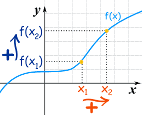
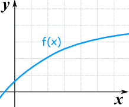
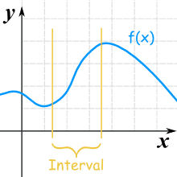
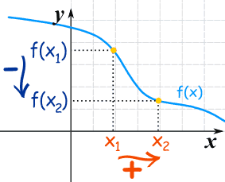
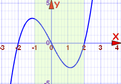
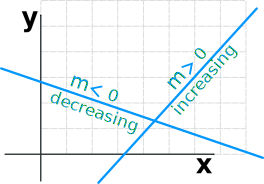
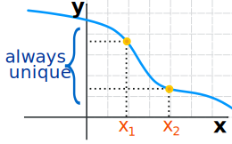

Increasing and Decreasing Functions
Increasing Functions
A function is "increasing" when the y-value increases as the x-value increases, like this:

It is easy to see that y=f(x) tends to go up as it goes along.
Flat?
What about that flat bit near the start? Is that OK?
- Yes, it is OK when we say the function is Increasing
- But it is not OK if we say the function is Strictly Increasing (no flatness allowed)
Using Algebra
What if we can't plot the graph to see if it is increasing? In that case we need a definition using algebra.
For a function y=f(x):
| when x1 < x2 then f(x1) ≤ f(x2) | Increasing | |
| when x1 < x2 then f(x1) < f(x2) | Strictly Increasing |
That has to be true for any x1, x2, not just some nice ones we might choose.
The important parts are the < and ≤ signs ... remember where they go!
An Example:
|  |
| This is also an increasing function even though the rate of increase reduces |
For An Interval
Usually we are only interested in some interval, like this one:

This function is increasing for the interval shown
(it may be increasing or decreasing elsewhere)
Decreasing Functions
The y-value decreases as the x-value increases:

For a function y=f(x):
| when x1 < x2 then f(x1) ≥ f(x2) | Decreasing | |
| when x1 < x2 then f(x1) > f(x2) | Strictly Decreasing |
Notice that f(x1) is now larger than (or equal to) f(x2).
An Example
Let us try to find where a function is increasing or decreasing.
Example: f(x) = x3−4x, for x in the interval [−1,2]
Let us plot it, including the interval [−1,2]:

Starting from −1 (the beginning of the interval [−1,2]):
- at x = −1 the function is decreasing,
- it continues to decrease until about 1.2
- it then increases from there, past x = 2
Without exact analysis we cannot pinpoint where the curve turns from decreasing to increasing, so let us just say:
Within the interval [−1,2]:
- the curve decreases in the interval [−1, approx 1.2]
- the curve increases in the interval [approx 1.2, 2]
Constant Functions
A Constant Function is a horizontal line:

Lines
In fact lines are either increasing, decreasing, or constant.
The equation of a line is:
y = mx + b

The slope m tells us if the function is increasing, decreasing or constant:
| m < 0 | decreasing | |
| m = 0 | constant | |
| m > 0 | increasing |
One-to-One
Strictly Increasing (and Strictly Decreasing) functions have a special property called "injective" or "one-to-one" which simply means we never get the same "y" value twice.

General Function

"Injective" (one-to-one)
Why is this useful? Because Injective Functions can be reversed!
We can go from a "y" value back to an "x" value (which we can't do when there is more than one possible "x" value).
Read Injective, Surjective and Bijective to find out more.